Basın Bültenleri
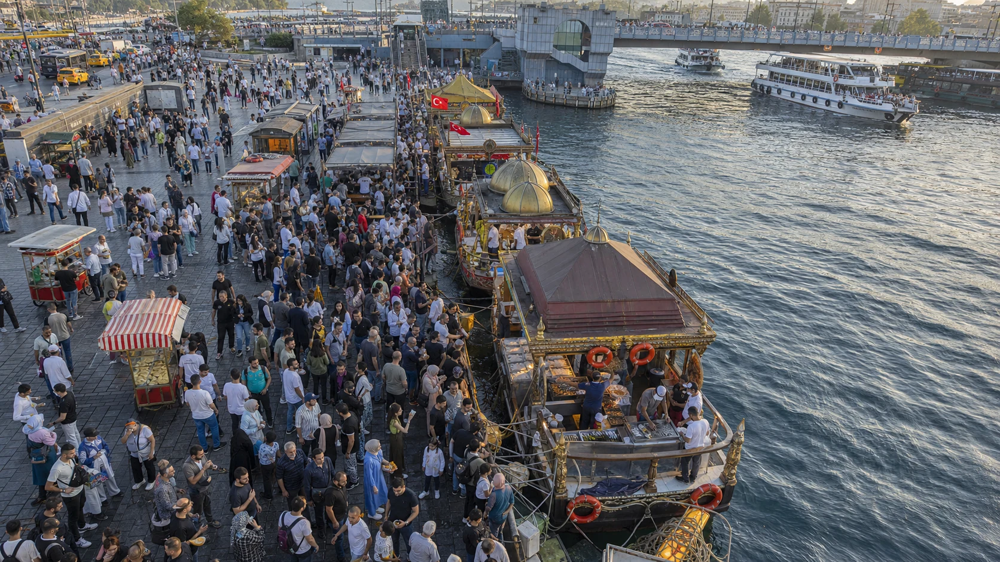
Coğrafi İşaret · Eminönü
Eminönü Balık Ekmeği coğrafi işaret tesciliyle koruma altında
İstanbul’un kıyı kültürünün simgelerinden Eminönü Balık Ekmeği; geleneksel hazırlama, sunum ve ürün özellikleriyle koruma altına alındı.
Coğrafi işaret belgelerini inceleFotoğraflar
 Teknede balık ekmek kültürü Büyüt
Teknede balık ekmek kültürü Büyüt

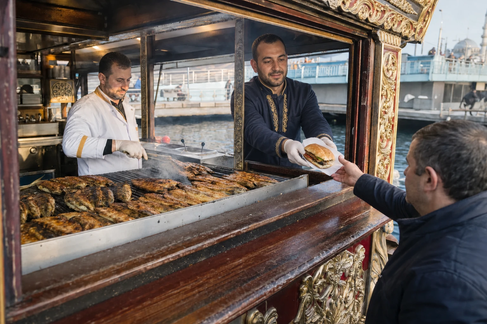
Tarihi teknede servis Büyüt
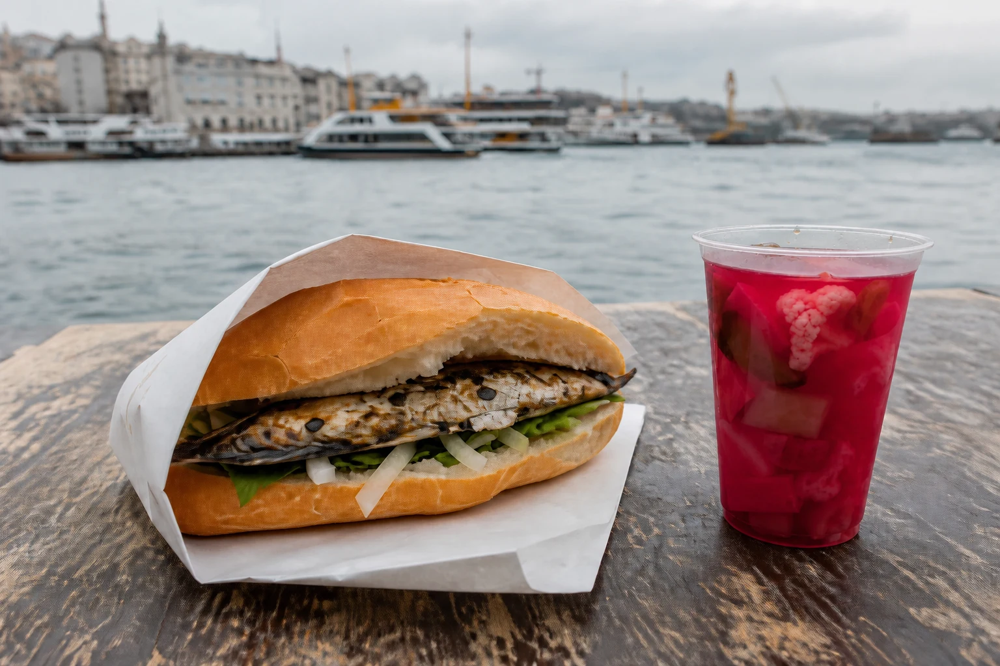
Balık ekmek ve turşu suyu Büyüt
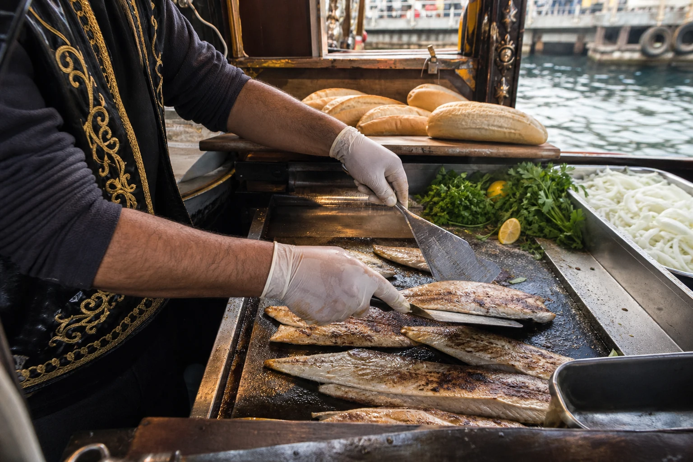
Izgarada hazırlık Büyüt Kuş bakışı Eminönü sahili Büyüt

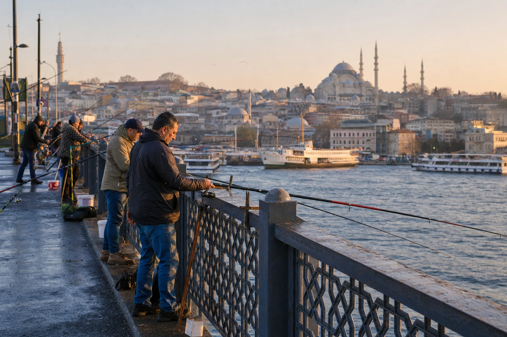
Galata Köprüsü'nde balıkçılar Büyüt
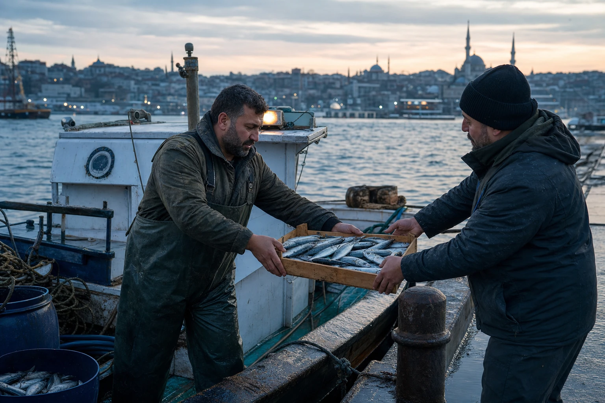
Günün ilk balık teslimatı Büyüt
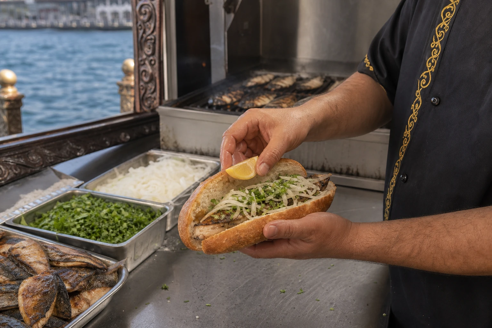
Geleneksel malzemelerle hazırlık Büyüt
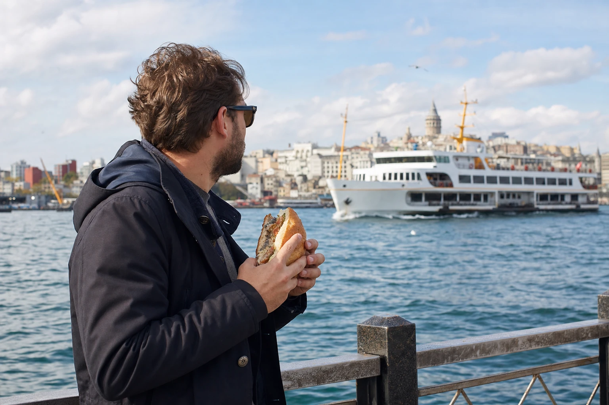
Vapur manzarasında balık ekmek Büyüt
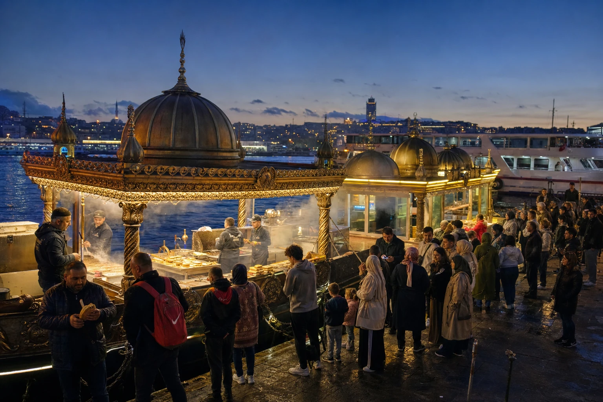
Eminönü'nde akşam servisi Büyüt
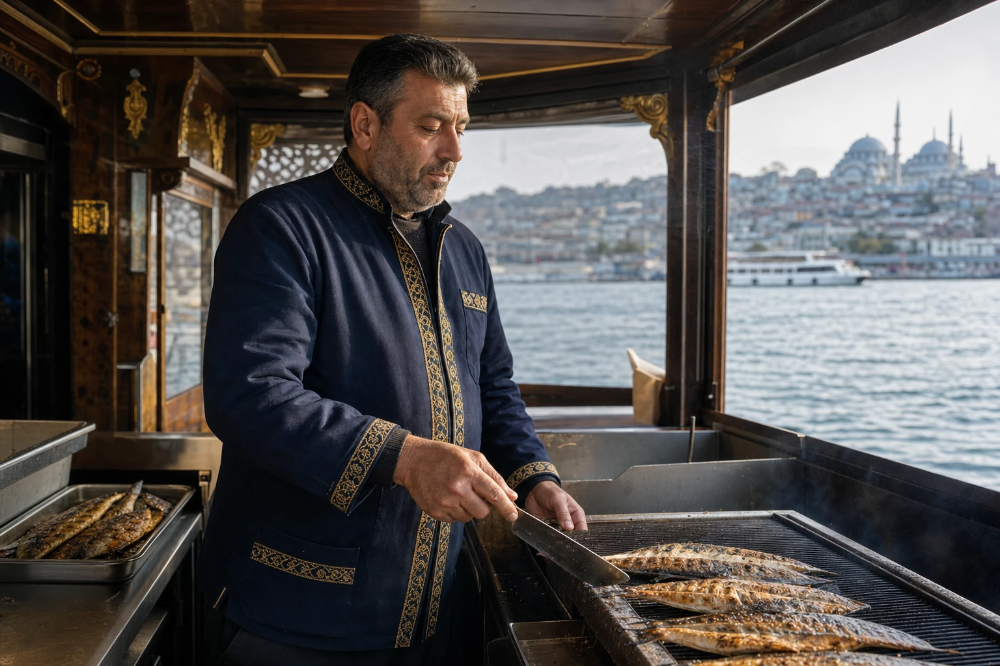
Balık ekmek ustası Büyüt
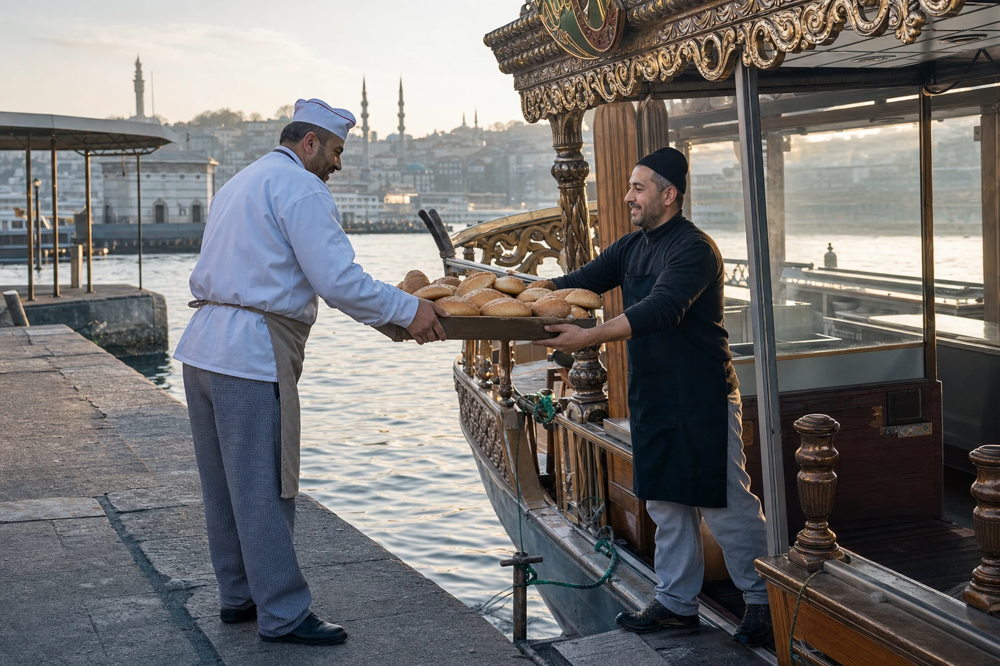
Tekneye taze ekmek teslimatı Büyüt